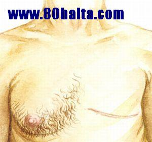

ئەسسالامۇ ئەلەيكۇم مۆھتىرەم تورداش، بلوگىمىزغا خۇش كەپسىز. قەدەملىرىڭىزدىن بەركەتلەر تۆكۈلگەي!
قۇربان ھېيتىمىزغا مۇبارەك بولسۇن، بارچە قەلىبلەر شاتلىققا تولسۇن!
 ئانانىزىم ئاسارىتىنى داۋالاش ھەققىدە قىسقىچە بايان
ئانانىزىم ئاسارىتىنى داۋالاش ھەققىدە قىسقىچە بايان
ئاپتورى:Birzat ۋاقتى:2010-05-28

جىنسىي ئىستەكنى سۈئىي ئۇسۇللار بىلەن قانائەتلەندۈرۈش زىيانلىقمۇ؟
ئاپتورى:Birzat ۋاقتى:2010-10-19
ئەسسالامۇ -ئەلەيكۈم بىر زات ئەپەندى .ئاللانىڭ رەھمىتى سىزلەرگە ۋە بىزلەرگە بولسۇن !
مەن سىلىدىن بىر مەسلىھەت سوراش نىيىتىدە بولغىلى خىلى بىر ۋاقىتلار بولغان بولسىمۇ ھەرخىل سەۋەبلەر تۈپەيلى بۈگۈنگچە سوزۇلۇپ كەلدى ، بۈگۈن ئۆزلىرىگە بايان ئەيلەي ، جاۋاپلىرىنى ئايىمىغايلا!
1.مەسىلە : مەن توي قىلغىلى توت يىل بولغان .ھازىر 2 پەرزەنتلىك بولدۇم .( ئاللا ھقا شۇكىرى) ئەمما خىزمەت سەۋەبىدىن ئائىلەمدىن ئايرىلىپ ئىچكىرى ئۆلىكىدە 2 يىل تۇرماقچى بولۇپ (ئويدىن ئايرىلغىلى 2 ئايدىن ئاشتى )يىلدا بىر قايتىمەن ، بۇ جەرياندا مەن ئۇزۇن مەزگىل بويتاقلىق ھاياتمغا قايتىشقا توغىرا كىلىدكەن . مۇشۇ ئۇزۇن مەزگىل جىنسى مۇناسىۋەتتىن توختاش ئەرلەرنىڭ جىنسى ئىقتىدارى ئاجىزلىشىنى كەلتۇرۇپ چىقىرامدۇ ؟ئەگەر راستىنلا شۇنداق بولسا قانداق ئالدىنى ئىلىش ئۇسۇلۇنى قوللانسام بولىدۇ ؟
2.مەسىلە :( بەزى دوسلىرىمدىن ئاڭلىسام توي قىلغاندىن كيىن تۇيۇقسىزلا جىنسى مۇناسۋەتتىن ئۇزۇن ۋاقىت توختاش يۇقارقىدەك كىسەللەرنى پەيدا قىلىدۇ دىيىشدۇ ،بىر ئاساسى بارمۇ ؟ يەنە ئۇلار ماڭا "سۇلىياۋ ئايال " 充气娃娃 ئلىپ بىرگە بولۇشنى تەۋىسيە قىلىشتى . بۇ ھەقتە مەسلەھەت بەرگەن بولسىلا!
خەتكۈش: جىنسىي
سېمىز ئەرلەر ئاسان قېرىپ كېتىدۇ
ئاپتورى:Birzat ۋاقتى:2010-10-10
ئامېرىكا ماسسا – چۇستىس شىتاتى يېڭى ئېنگلاند تەتقىقات ئۇنىۋېرسىتېتىنىڭ تەتقىقاتچىلىرى يېقىندا ئەرلەرنىڭ بەدەن ئېغىرلىقىنىڭ ئېشىپ كېتىشى ئۇرۇقداننىڭ ھورمون ئاجرىتىپ چىقىرىش ئىقتىدارىنى زور دەرىجىدە تۆۋەنلىتىۋېتىپ، قېرىشنى تېزلىتىۋېتىدىغانلىقىنى ئوتتۇرىغا قويدى.
تەتقىقاتچىلاردىن بىرى بولغان توماس ماۋۇلارنى بىلدۈردى: ئەرلەرنىڭ يېشىنىڭ چوڭىيىشىغا ئەگىشىپ، ئۇرۇقداننىڭ ھورمون ئاجرىتىپ چىقىرىش ئىقتىدارى بارا – بارا تۆۋەنلەيدۇ، بۇمۇ ئەرلەرنىڭ ئوتتۇرا ياشتىن ئاشقاندىن كېيىن ئاسانلا قەنت كېسىلى، سۆڭەك ماددىسى بوشىشىش كېسىلى، مۇسكۇللار بوشىشىش ۋە قەۋزىيەت قاتارلىق كېسەللىكلەرگە گىرىپتار بولۇشىنىڭ بىر سەۋەبى بولۇشى مۇمكىن.
بۇ تەتقىقاتنىڭ مۇھىم نۇقتىسى ئەرلەرنىڭ ئۇرۇقدىنىنىڭ...............
ﯰﻳﻐﯘﺭ ﺗﯩﺒﺎﺑﯩﺘﯩﺪﻩ ﺑﯚﺭﻩﻙ ﯮﺭﯗﻗﻼﭖ ﻛﯧﺘﯩﺸﻨﻰ ﺩﺍﯞﺍﻻﺵ
ئاپتورى:Birzat ۋاقتى:2010-10-05
ﺑﯚﺭﻩﻙ ﻣﯩﺰﺍﺟﯩﻨﯩﯔ ﺋﯩﺴﺴﯩﻖ ﻳﺎﻛﻰ ﺳﻮﻏﯘﻗﺘﯩﻦ ﺑﯘﺯﯗﻟﯩﺸﻰ، ﺟﯩﻨﺴﯩﻲ ﯪﻻﻗﯩﻨﻰ ﻛﯚﭖ ﻗﯩﻠﯩﺶ، ﺳﯜﺭﮔﯜ ﯞﻩ ﺳﯜﻳﺪﯛﻙ ﻫﻪﻳﺪﯨﮕﯜﭼﻰ ﺩﻭﺭﯨﻼﺭﻧﻰ ﻛﯚﭖ ﺋﯩﺸﻠﯩﺘﯩﺸﺘﯩﻦ ﻛﯩﻠﯩﭗ ﭼﯩﻘﻘﺎﻥ ﺑﯚﺭﻩﻙ ﻳﺎﻏﻠﯩﺮﯨﻨﯩﯔ ﺗﺎﺯﻟﯩﻨﯩﭗ ﻛﯧﺘﯩﺸﻰ، ﺑﯚﺭﻩﻛﺘﻪ ﻫﻪﺭ ﺧﯩﻞ ﺳﻮﺯﯗﻟﻤﺎ ﺳﻮﺯﯗﻟﻤﺎ ﺧﺎﺭﺍﻛﺘﯧﺮﻟﯩﻚ ﻳﺎﻟﻠﯘﻏﻼﺭﻧﯩﯔ ( ﺑﯚﺭﻩﻙ ﻳﺎﻟﻠﯘﻏﻰ، ﻣﻪﺯﻯ ﺑﯧﺰﻯ ﻳﺎﻟﻠﯘﻏﻰ،ﯰﺭﯗﻗﺪﺍﻥ ﻳﺎﻟﻠﯘﻏﻰ ، ﺩﻭﯞﺳﯘﻥ ﻳﺎﻟﻠﯘﻏﻰ ﺩﯦﮕﻪﻧﺪﻩﻙ ﻳﺎﻟﻠﯘﻏﻼﺭﻧﯩﯔ ) ﯰﺯﺍﻕ ﺩﺍﯞﺍﻣﻠﯩﺸﯩﺸﻰ ، ﯰﺯﺍﻕ ﯞﺍﻗﯩﺖ ﺟﻪﻟﯩﻖ (ﯪﻧﺎﻧﯩﺰﯨﻢ ) ﻗﯩﻠﯩﺶ، ﺭﻭﻫﯩﻲ ﺟﻪﻫﻪﺗﺘﯩﻦ ﯪﺯﺍﺑﻠﯩﻨﯩﺶ، ﺯﻩﻫﻪﺭﻟﯩﻚ ﭼﯧﻜﯩﻤﻠﯩﻜﻠﻪﺭﻧﻰ ﻛﯚﭖ ﭼﯧﻜﯩﺶ، ﺷﻪﻫﯟﻩﺗﻨﻰ ﻛﯜﭼﻠﻪﻧﺪﯛﺭﮔﯜﭼﻰ (ﺑﺎﺯﺍﺭﻻﺭﺩﺍ ﺑﻮﺭﻩﻛﻨﻰ ﻗﯘﯞﯞﻩﺗﻠﻪﻳﺪﯗ ﺩﻩﭖ ﻗﯧﭙﯩﻐﺎ ﻣﯘﺳﻜﯘﻟﻼﺭﻧﻰ ﺋﯩﺴﯩﻠﺪﯗﺭﻏﺎﻥ ﻳﺎﻟﯩﯖﺎﭺ ﯬﺭ-ﯪﻳﺎﻟﻼﺭﻧﯩﯔ ﺭﻩﺳﯩﻤﻰ ﭼﺎﭘﻼﻧﻐﺎﻥ ﺷﻪﻫﯟﻩﺗﻨﻰ ﺗﯧﺰ ﻛﯜﭼﻪﻳﺘﻜﯜﭼﻰ ﺩﻭﺭﯨﻼﺭ)، ﻳﺎﻛﻰ ﻣﻪﺳﺖ ﻗﯩﻠﻐﯘﭼﻰ ﺩﻭﺭﯨﻼﺭﻧﻰ ﻛﯚﭖ ﺋﯩﺴﺘﯩﻤﺎﻝ ﻗﯩﻠﯩﺶ ﻗﺎﺗﺎﺭﻟﯩﻖ ﺳﻪﯞﻩﺑﻠﻪﺭ ﺑﯚﺭﻩﻙ ﻳﺎﻏﻠﯩﺮﯨﻨﻰ ﺧﻮﺭﯨﺘﯩﭗ ، ﺑﯚﺭﻩﻙ ﯮﺭﯗﻗﻼﺷﻨﻰ ﻛﻪﻟﺘﯜﺭﯛﭖ ﭼﯩﻘﯩﺮﯨﺪﯗ. ﻗﻪﻧﺖ ﺳﯧﻴﯩﺶ ﻛﯧﺴﻪﻟﻠﯩﻜﯩﻤﯘ ﺑﯚﺭﻩﻙ ﯮﺭﯗﻗﻼﺷﻨﻰ ﻛﻪﻟﺘﯜﺭﯛﭖ ﭼﯩﻘﯩﺮﯨﺪﯗ.
ﻛﯧﺴﻪﻟﻠﯩﻚ ﯪﻻﻣﻪﺗﻠﯩﺮﻯ:
خەتكۈش: بۆرەك
مۇۋاپىق بولغان جىنسىي مۇناسىۋەت قېتىم سانى قانچە بولسا بولىدۇ
ئاپتورى:Birzat ۋاقتى:2010-10-05
بىر قېتىم مۇناسىۋەت قىلىپ بولغاندىن كىيىن قانچە ۋاقىتتىن كىيىن قايتا مۇناسىۋەت قىلىش مۇۋاپىق؟ بۇ مەسىلىگە ناھايتى ئىنىق قىلىپ جاۋاب بىرىش ئىنتايىن تەس. بۇ ئەر-خوتۇن ئىككىسىنىڭ يېشى، تەن سالامەتلىكى، كەسپى، مىجەزى، روھىي كەيپىياتى، موھىت،ئوزۇقلۇق شارائىتى قاتارلىق ئامىللار ئارقىلىق بەلگىلىنىدۇ. جىنسىي مۇناسىۋەت سانىنى مۇقەررەر ھالدا ھەپتىدە ياكى ئايدا مۇنچە قېتىم بولسا مۇۋاپىق بولىدۇ دەپ كېسىپ ئېيتماق ئۇنچە ئاسان ئەمەس. ئىلگىركى ھۆكۈمالار ساغلام كىشىلەر ھەپتىدە 2 قېتىم جىنسىي مۇناسىۋەتتە بولسا جىنسىي قۇۋۋەتنى ئۇزۇن مەزگىل داۋاملاشتۇرغىلى، قىرىشنى كېچىكتۈرگىلى بولىدۇ دەپتىكەن.
يېڭى تۇرمۇش قۇرغاندا جىنسىي تەلەپ كۈچلۈك بولۇپ ، جىنسىي مۇناسىۋەت قېتىم سانىمۇ كۆپ بولىدۇ.
خەتكۈش: جىنسىي
قانلىق مەنىي كېلىش
ئاپتورى:Birzat ۋاقتى:2010-10-05

تونۇش: نۇرمال مەنىي سۇيۇقلىقى ئاقۇش، سۈت رەڭلىك ياكى سارغۇچراق سۈت رەڭلىك بولىدۇ. ئەگەر چىقىرىلغان مەنىي سۇيۇقلىقى قىزغۇچ، قىزىل، جىگەر رەڭ ياكى مەنىي تەركىبىدە ئۇيۇغان ئۇششاق قان مونەكچىلىرى بولسا، مەنىيگە قان ئارىلىشىپ كەلگەنلىكتىن بولۇشى مومكىن. بۇ قانلىق مەنىي ياكى مەنىي بىلەن قان كېلىش دەپ ئاتىلىدۇ.
سەۋەبى: بۇ كېسەل كۆپۈنچە مەنىي ئىشلەپچىقىرىش ئەزالىرىنىڭ بىرەرسىدە، جۈملىدىن مەنىي خالتىسىنىڭ قان تومۇر دىۋارلىرىدا ياللۇقلىنىش ياكى ئىششىش يۈز بەرسە ياكى مەني خالتىسىنىڭ ئۆزىدە جاراھەت بولسىمۇ مەنىي خالتىسىنىڭ قان تومۇرلىرىنى چىرىتىش نەتىجىسىدە جىنسىي ئالاقە قىلغان ۋاقىتتا مەنىي بىلەن قان ياكى قانلا كېلىش يۈز بىرىدۇ. بۇ ئەھۋالنىڭ پەيدا بولۇشىدا ھەر خىل يۇقۇملۇق جىنسىي كېسەللىكلەر، ئۆتكۈر غېدىقلىغۇچى يېمەك-ئىچمەكلەر، زىيادە كۆپ بولغان جىنسىي مۇناسىۋەت، ئانانىىزمغا ئادەتلىنىپ قىلىش ياكى ئۇزۇن ۋاقىت جىنسىي مۇناسىۋەت قىلماسلىق، جىنسىي مۇناسىۋەت قىلمىغان ئەھۋال ئاستىدا كۆپۈنچە جىنسىي قوزغىلىش ھالىتىدە تۇرۇش، جۈملىدىن سېرىق مەزمۇندىكى كېنو-فىلىملەرنى كۆپ كۆرۈش، يالىڭاچ ئاياللار، شەھۋانىي خىياللارنى كۆپ قىلىش دېگەندەك ئامىللار سەۋەب بولىشى مومكىن.
كېسەللىك ئىپادىلىرى:
پۇتىنى ئالماپ ئولتۇرۇش ۋە سالامەتلىك
ئاپتورى:Birzat ۋاقتى:2010-09-23

نۇرغۇن كىشىلەر ئورۇندۇقتا ئولتۇرغاندا پۇتىنى ئالماپ ئولتۇرۇشقا ئادەتلىنىپ قالىدۇ، پۇتىنى ئالماپ ئولتۇرسا ئۆزىنى ناھايىتى راھەت ھېس قىلىدۇ. ئەمما مۇتەخەسىسلەر شۇنى ئەسكەرتىدۇكى، پۇتىنى ئالماپ ئولتۇرۇش نۇرغۇن كېسەللىكلەرنى كەلتۈرۈپ چىقىرىش مۇمكىن.
خەتكۈش: to sit cross-legged
تور ئويۇنى ئويناش ئەرلەرنىڭ چېچىنىڭ چۈشۈپ كېتىشىدىكى باش جىنايەتچى
ئاپتورى:Birzat ۋاقتى:2010-09-23

تۇرمۇش رېتىمىنىڭ تېزلىشىشى ۋە تۇرمۇش شەكلىنىڭ ئۆزگىرىشىگە ئەگىشىپ، كومپيۇتېر ئىشلىتىدىغانلارنىڭ سانى بارغانسېرى كۆپەيمەكتە، بۇنىڭ بىلەن چاچنىڭ قېرىشىمۇ تېزلەشمەكتە. ئۇزۇن مۇددەت تورغا چىققاندا ۋە تور ئويۇنى ئوينىغاندا، كىشى ئاسانلا چارچايدۇ، مەركىزىي نېرۋا سىستېمىسى ئۇزۇن مۇددەت جىددىي ھالەتتە تۇرغاچقا، نېرۋا قالايمىقانلىشىپ، تېرىدىكى قان تومۇرلارنىڭ قىسقىراش ئىقتىدارى بۇزۇلىدۇ، باش تېرىسىنىڭ قىسمەن جايلىرىدىكى قان تومۇرلارنىڭ قىسقىرىشى تۈپەيلىدىن قان بىلەن تەمىنلەش يېتەرلىك بولماي، تۈك خالتىلىرىنىڭ ئوزۇقلۇق بىلەن تەمىنلىنەلمەسلىكىنى كەلتۈرۈپ چىقىرىدۇ.
خەتكۈش: تور، كومپيۇتېر، ئويۇن
پاينەكباش-تازلار شۇنچە جەلىبكارمۇ؟
ئاپتورى:Birzat ۋاقتى:2010-09-15

ئوي پىكىرى چۇڭقۇر، تەسەۋۋۇرى مول بىر توردىشىم بار. بۇ خانىم ئاجايىپ سۇئاللارنى سوراپ ئۇچۇرلارنى ئەۋەتىپ تۇرىدۇ. تۈنۈگۈن بىر سۇئال سوراپتىكەن، سۇئال مەزمۇنى مۇنداق:
مەيلى خەلق چۆچەكلىرى بولسۇن ياكى ھىكايەتلەر بولسۇن كۆپۈنچىسىدە دېگۈدەك باي-زەردارلارنىڭ، بەگ-پادىشاھلارنىڭ ئاياللىرى، قىزلىرى ئۆز ئۆيلىرىدە ئىشلەيدىغان مالاي تازلارنى ياخشى كۆرۈپ قىلىش سەۋەبلىك پۇللۇق، ئابرويلۇق ئەرلىرىگە خىيانەت قىلىش يولىنى تاللايدىغان ئەھۋال كۆپ ئۇچرايدىكەن. تۇرۇپ ئويلاپ قالدىم: تازلارنىڭ شۇ ئاياللارنى ئۆزىگە رام قىلىۋىلىشىدا قانداق سىر-ھېكمەت باردۇ؟!!!
ئەرلەر بۆرەكنى ئاسىراشنى كىچىكىدىن ئادەت قىلىش كىرەك
ئاپتورى:Birzat ۋاقتى:2010-09-03
 ئەرلەرنىڭ بۆرىكى يۈرەككە ئوخشاشلا ئىنتايىن مۇھىم ، يېقىنقى يىللاردىن بۇيان نۇرغۇنلىغان ئەرلەر ھەرخىل دورىلار ئارقىلىق بۆرىكىنى ئاسىراۋاتقان بولسىمۇ ئەمما ئەرلەر ئۈزىنىڭ تۇرمۇشىدىكى يىمەك-ئىچمەك ۋە ناچار تۇرمۇش ئادىتى قاتارلىق سەۋەبىدىن ئۈزىنىڭ بۆرىكىگە زىيانكەشلىك قىلۋاتقانلىقىغا ئانچە دىقەت قىلىپ كەتمەيدۇ. شۇڭا سىز بۆرىكىڭىزنى ئاسىرىشىڭىزدا چۇقۇم يىمەك-ئىچمەك ۋە ناچار تۇمۇش ئادىتىڭىزنى ئۆزگەرتىشىڭىزدىن باشلشىڭىز كىرەك .
ئەرلەرنىڭ بۆرىكى يۈرەككە ئوخشاشلا ئىنتايىن مۇھىم ، يېقىنقى يىللاردىن بۇيان نۇرغۇنلىغان ئەرلەر ھەرخىل دورىلار ئارقىلىق بۆرىكىنى ئاسىراۋاتقان بولسىمۇ ئەمما ئەرلەر ئۈزىنىڭ تۇرمۇشىدىكى يىمەك-ئىچمەك ۋە ناچار تۇرمۇش ئادىتى قاتارلىق سەۋەبىدىن ئۈزىنىڭ بۆرىكىگە زىيانكەشلىك قىلۋاتقانلىقىغا ئانچە دىقەت قىلىپ كەتمەيدۇ. شۇڭا سىز بۆرىكىڭىزنى ئاسىرىشىڭىزدا چۇقۇم يىمەك-ئىچمەك ۋە ناچار تۇمۇش ئادىتىڭىزنى ئۆزگەرتىشىڭىزدىن باشلشىڭىز كىرەك .
1. پىۋا ئىچىشكە ئامراق بۇلۇش
خەتكۈش: بۆرەك
بۆرەك ئاجىزلىقىنىڭ ئالامەتلىرى The Symptoms of Kidney Weakness
ئاپتورى:Birzat ۋاقتى:2010-09-02

قەدىمكى تېبابەتتە "بۆرەك ئاجىزلاپ كېتىش" تىكى "بۆرەك" پەقەت بەدەندىكى بۆرەك ئەزاسىنىلا كۆرسىتىپ قالماستىن ، بەلكى ئادەمنىڭ جىنسىي كۈچى ، جىنسىي ئالاقىسى ، جىنسىي تۇرمۇشى ، كۆپىيىش سېستىمىسنىڭ ئەھۋالى ، ئۆسۈپ يېتىلىشى ، ھەزىم قىلىش ، ئىچكى ئاجراتمىلارنىڭ نورمال بولۇش بولماسلىقىغا قارىتىلغان ئىدى . "بۆرەك ئاجىزلاش ئالامىتى" مۇ ناھايىتى كەڭ بولغان بىر ئۇقۇم بولۇپ ، ئۇ سۈيدۈك سېستىمىسى ، روھى ساغلاملىق ھەم ھەزىم قىلىش ، قان ، نەپەس ئېلىش قاتارلىق سېستىمىلارغا مۇناسىۋەتلىك كېسەللك . شۇڭلاشقا ، بۆرەك ئاجىزلىشىنىڭ ئالامەتلىرىمۇ ناھايىتى كۆپ بولىدۇ ، ئومۇمەن تۆۋەندىكىچە :
خەتكۈش: بۆرەك ئاجىزلىقىنىڭ ئالامەتلىرى The Symptoms of Kidney Weakness
خورەك تارتىش ئەرلىك ئىقتىدارنى ئاجىزلاشتۇرىدۇ Snoring and Men's Health
ئاپتورى:Birzat ۋاقتى:2010-08-23
 تېببىي مۇتەخەسسىسلەرنىڭ تونۇشتۇرىشىچە ، خورەك تارتىش ئۇيقۇ سۈپىتىگە بىۋاستە تەسىر كۆرسىتىدىكەن . زىيابىتۇس ، يۇقىرى قان بېسىم، سوققان تومۇر قېتىشىش قاتارلىق كېسەللىكلەرنى كەلتۈرۈپ چىقىرىپلا قالماي ، يەنە ئەرلىك ئىقتىدارنى توسالغۇغا ئۇچرىتىدىكەن .
تېببىي مۇتەخەسسىسلەرنىڭ تونۇشتۇرىشىچە ، خورەك تارتىش ئۇيقۇ سۈپىتىگە بىۋاستە تەسىر كۆرسىتىدىكەن . زىيابىتۇس ، يۇقىرى قان بېسىم، سوققان تومۇر قېتىشىش قاتارلىق كېسەللىكلەرنى كەلتۈرۈپ چىقىرىپلا قالماي ، يەنە ئەرلىك ئىقتىدارنى توسالغۇغا ئۇچرىتىدىكەن .
ئەرلىك ئىقتىدار توسالغۇغا ئۇچراش يەنە باھ زەئىپلىشىش ، دەپمۇ ئاتىلىدۇ . ئۇنى كەلتۈرۈپ چىقىرىدىغان سەۋەبلەر ناھايتى كۆپ . مەسلەن ، روھىي ئامىل ، زىيابىتۇس ، يۇقىرى قان بېسىم ، سوققان تومۇر قېتىشىش كېسىلى ۋە بەزى دورا قاتارلىقلار . لېكىن ، خورەك تارتىش بىلەن ئەرلىك ئىقتىدارى توسالغۇغا ئۇچراشنىڭ مۇناسىۋىتىنى كۆپ كىشلەر بىلمەسلىكى مۇمكىن .
خىمىيىلىك بۇيۇملارنىڭ بۇلغىشى ئاستىدىكى جىنىس بۇزۇلۇشى Broken sex
ئاپتورى:Birzat ۋاقتى:2010-08-18

كەلگۈسىدىكى مەلۇم بىر كۈنلەرگە بارغاندا كۆپ ساندىكى ئەرلەر خۇددى بۇلبۇلدەك ئىنچىكە ئاۋازدا ئەتىر توغرىلىق پاراڭغا چۈشىدۇ، ئەركەك ئەرلەر ناھايىتى «ئەتىۋار»لىشىپ كېتىدۇ. بۇ سىزگە «مىڭ بىر كېچە» ھېكايىلىرىدەك تۇيۇلۇۋاتامدۇ؟ ئەمما ئەڭ يېڭى بىرتۈرلۈك تەتقىقاتتا كۆرسىتىلىشىچە، مۇھىتنىڭ بۇلغىنىشى جانۋارلارنىڭ تەدرىجىي تەرەققىياتىغا بۇزغۇنچىلىق قىلىپ، ئەركەك جانلىقلارنىڭ ئانىلىشىشىغا سەۋەب بولغانلىقتىن، كەلگۈسىدىكى ئەرلەر دۇنياسى ھەقىقەتەن بارغانسېرى ئاياللىشىپ كېتىدىكەن.
(رەسىمدە بىر ئەر ئۆزىنىڭ ئۆلسىمۇ ئايال بولىدىغانلىقىنى بىلدۈردى)
ئانانىزىمدىن قالغان ئاسارەتلەرنى ئوزۇقلۇقلار بىلەن داۋالىغىلى بولامدۇ؟
ئاپتورى:Birzat ۋاقتى:2010-08-12
بىز تور بېتىمىزغا يوللانغان ئانانىزىم ئاسارىتىگە مۇناسىۋەتلىك ئۇچۇرلارنىڭ تورداشلارغا پىسخىك بېسىم پەيدا قىلىشىنى خالىمايمىز. لىكىن راست گەپنى يوشۇرۇپ ئەھۋالنىڭ تېخىمۇ ئېغىرلاپ كېتىشىنىمۇ خالىمايمىز. تورداشلارنىڭ خەتلىرىدىكى بەزى بىر ئېغىر بولغان ئەھۋاللارنى ئوقۇپ ئانانىزىم ئادىتىگە كۆنۈپ قالغان ياش دوستلارنىڭ ئىبرەت ئىلىپ قول ئۈزۈپ ،توغرا بولغان تۇرمۇش ئادىتى، ئوزۇقلىنىش ئادىتى يېتىلدۈرۈپ تەن ساقلىقىنى ئاسرىشىنى تەۋسىيە قىلىمىز.
بەزى تورداشلاردا ئانانىزمدىن ئىبارەت جىنسىي پائالىيەتنىڭ ئۆزىنى بىر خىل كېسەللىك ئىكەن دەپ ئۆزىگە روھىي بىسىم قىلىۋالىدىغان ئەھۋاللار بار ئىكەن. بىز باشتىن دەپ كىلىۋاتقىنىمىزدەك ئانانىزىم ئۆزى كېسەللىك ئەمەس، لىكىن بۇ خىل ناتوغرا جىنسىي پائالىيەت ( ئۆز-ئۆزى بىلەن جىنسىي پائالىيەت ئىلىپ بارىدىغان ) نىڭ ئاستا - ئاستا خۇمار قىلىش، ئاندىن كىيىن جىسنىي ئەزالارنى مەركەز قىلىپ تۇرۇپ بۆرەك، مەزى بېزى ، نېرۋا، يۈرەك، ئاشقازان، جىگەر قاتارلىق چوڭ ئەزالاردىن باشلاپ ئۇششاق نېرىپلارغىچە پەيدىنپەي ئاجىزلاشتۇرۇپ ماڭىدىغانلىقىنى قەيت قىلىپ كىلىۋاتىمىز. ھەر ئادەمنىڭ گېن تۈزۈلىشى، ئوزۇقلىنىش، تۇرمۇش ئادىتى، روھىي ساپاسىنىڭ ئوخشىماسلىقىغا قاراپ ئانانىزىم ئادىتىدىن بولىدىغان ئاسارەتلەرنىڭ ئېغىر-يېنىكلىكىمۇ پەرقلىق بولىدۇ.
خەتكۈش: ئانانىزىم
يۈرەك ئاجىزلىقىدىن بولغان جىنسىي ئاجىزلىق ھەققىدە مەسلەھەت
ئاپتورى:Birzat ۋاقتى:2010-08-09
مەن بۇرۇن ئانانىزىم بىلەن خىلى ئۇزۇن ۋاقىت شۇغۇلانغان ئىدىم. شۇ ۋاقىتلاردىمۇ مەندە بەزى بىر بىنۇرمال ئالامەتلەر كۆرۈلۈشكە باشلىغان. كېيىن 80خالتا تورىدىن ئانانىزىمنىڭ ئەركەك زاتى ئۈچۈن ئىنتايىن زىيانلىق ئىكەنلىكىنى بىلىپ بىلىپ قول ئۈزگىلى خېلى بولدى. ھازىرقى مەندىكى مەسىلە جىنسىيەت، شەھۋانىي كۆرۈنۈش دېگەندەك ھېلىقدەك ئىشلارنى ئويلسام جىنسى ئەزا نورمال قاتسىمۇ مۇناسۋەت قىلدىغان چاغدا دەرھال بوشاپ كېتىدىغان ھەم يۈرەك سېلىپ بەدىنىم تېترەپ كېتىدىغان ئالامەت بار. ياشلا تۇرۇپ بۇنداق ئەھۋالغا دۇچ كىلىش مېنى خىلىلا ئەندىشىگە سىلىپ قويدى. ئانانىزىمنىڭ ئاسارەتلىرى ھەققىدە يازغان تېمىلىرىدىن يۈرەك ئاجزىلاشنىمۇ ئەنە شۇ ئانانىزىم ئاسارىتى سەۋەبىدىن ئىكەن دەپ قارىدىم. مۇشۇ قاراشلىرىم توغرىمۇ؟ مۇشۇ ھەقتە قىممەتلىك ۋاقىتلىرنى چىقىرىپ مەسلىھەت بەرگەن بولسىلا، رەھمەت!!!
ئەرلەر «ئاياللار كېسىلى»گە گىرىپتار بولۇپ قالغاندا [ئەركەكلەر]
ئاپتورى:Birzat ۋاقتى:2010-08-08

ئاجايىپ-غارايىپ كېسەللەردىن ئاياللارغا خاسلىرىمۇ ، ئەرلەرگە خاسلىرىمۇ بولىدۇ. ئەمەلىيەتتە ، ئەسلىدە ئاياللارغا خاس كېسەللىكلەردىن بەزىلىرىنىڭ بىخەستە ئەرلەرگە ئۆتۈپ قالىدىغانلىقى مەلۇم بولدى.
گۈزەل خوتۇن ئالماقچى بولغانلار قايسى خىل شەرتلەرنى ھازىرلىشى كېرەك؟
ئاپتورى:Birzat ۋاقتى:2010-07-31
كونىلار <<چىرايلىقتىن ۋاپا كەلمەيدۇ>> دېگەندەك نۇرغۇن كىشىلەرنىڭ گۈزەل ئاياللارغا نىسپەتەن قارشى ئانچە ياخشى ئەمەس. گۈزەل ئاياللارنى سەل ئەتىۋارلاپ قويسىڭىز غادىيۋالغان، تەلىپىنىڭ يۇقۇرلىقى ئادەمنىڭ ئوغىسىنى قاينىتىدۇ. شۇڭا ، گۇزەل ئاياللارنىڭ دوستى كۆپ بولمايدۇ. ھەممە ئىش ئوغۇرلىقچە بولىدۇ، ئوچۇق-ئاشكارە بولىدىغان ئىشلار ناھايىتى ئاز . شۇڭا، بەزىلەرنىڭ گۈزەل ئايالىغا ئىرىشتىم دىگىنى ئانچە خوش خەۋەر بولماستىن ، بەلكى ئۇنىڭ ئىرشىدىغىنى ئىچ ئاغرىتىشتىن ئىبارەت دېيشىدۇ. مېنىڭچىمۇ قەلبى ئىيمان بىلەن بىزەلمىگەن گۈزەللەرنىڭ ھۆددىسىدىن چىقماق ھەقىقەتەن تەس.
تۆۋەندە گۈزەل ئاياللارنى ئالغان ئەرلەر ھازىرلاشقا تېگىشلىك بەزى بىر ئەمەلىي ئىقتىدارلار ھەققىدە تورداشلار ھەر خىل كۆز قاراشلارنى ئوتتۇرغا قويغان بولۇپ سىزمۇ ئىشتىراك قىلىپ باققايسىز. خۇدا نىسىپ قىلىپ بىرەر گۈزەل نازىنىن بىلەن نىكاھ قۇرۇپ قالسىڭىز پايدىسى بولۇپ قالامدۇ تېخى!! 
ئاياللار نېمە ئۈچۈن تالاغا قاراپ قالىدۇ؟ [ئەركەكلەر]
ئاپتورى:Birzat ۋاقتى:2010-07-23

چۇمادۇ يەنە بىر ياشنىڭ جېنىغا زامىن بولدى
ئاپتورى:Birzat ۋاقتى:2010-07-12
زىيانكەشلىككە ئۇچرىغۇچى تۆنۈگۈن كەچ ئۆزىدىن نەچچە ياش كىچىك بالىلار بىلەن شۇ « دورا » نى كۆپ ئېستىمال قىلغان ، بۈگۈن سەھەرلىكى باشقىلار ئويغىنىپ ، ئۇنى ئويغاتسا مەن بەك ھېرىپ كەتتىم ، دەپ يەنە ياتقان . باشقىلار شۇنىڭ بىلەن چىقىپ كېتىشكەن .
( بۇ كۈنى زىيانكەشلىككە ئۇچرىغۇچى ئۆز ئۆيىدە ياتمىغان ئىكەن )
خەتكۈش: چۇمادو
曲马多 (چۇمادو) قانداق دورا؟ Tramadol ياشلارنىڭ باھارىغا سايە تاشلىماقتا
ئاپتورى:Birzat ۋاقتى:2010-07-12

بىر قىسىم تورداشلار نۆۋەتتە ئۇيغۇر ياش - ئۆسمۈرلىرى ئارىسىدا ، بولۇپمۇ ئالىي مەكتەپ ئوقۇغۇچىلىرى ئارىسىدا 盐酸曲马多 نى قالايمىقان ئىستېمال قىلىشتەك ناچار خاھىشنىڭ ئەدەپ قالغانلىقىنى تىلغا ئېلىشىپ، نەزىرىمىزنى ئۇشبۇ ئىشقا ئاغدۇرۇشقا چاقىرماقتا.
خوش، ئۇنداقتا ، بىر قىسىم ياش - ئۆسمۈر قېرىنداشلىرىمىز نېمە ۋەجىدىن مەزكۇر دورىنى ئىستېمال قىلىشىدۇ ؟
خەتكۈش: چۇمادو
曲马多 (چۇمادو) بىلەن ئاخىرلاشقان ھايات!!
ئاپتورى:Birzat ۋاقتى:2010-07-12
جىنسىي ئاجىزلىقنى كەلتۈرۈپ چىقارغۇچى دورىلار [ئەركەكلەر]
ئاپتورى:Birzat ۋاقتى:2010-07-07

شەھۋانى تور خۇمارلىقى ۋە قول بىلەن لەزەتلىنىش خۇمارلىقىدىن قۇتۇلۇش
ئاپتورى:Birzat ۋاقتى:2010-07-02
ئەسسالامۇ ئەلەيكۇم بۇرادىرىم، بويتاقلىق زېرىكىشلىك تۇرمۇش پىسخىكىڭىزدا بەزى بىر نۇرمالسىزلىقلارنى كەلتۈرۈپ چىقىرۋاتامدۇ؟ سىز خىلىدىن بىرى شەھۋانىي مەزمۇندىكى كۆرۈنۈشلەرنى كۆرۈشكە خۇمار بولۇپ قېلىۋاتامسىز؟؟ ئانانىزىمغا ئۈگۈنۈپ قىلىش سەۋەبلىك روھىيتىڭىزنى پەيمان قىلىشتىن باشلانغان ئېغىر دەرىجىدىكى خورىتىش ئەرلىك جاسارىتىڭىزنى، بىر ئائىلىگە باش، تۈۋرۈك بولغۇدەك مەزمۇت قەدەملىرىڭىزنى ھالسىرتىپ قويغاندا زەئىپلىك، ئىمكانسىزلىقنىڭ بىر ئەركەك ئۈچۈن نەقەدەر ئېغىر خورلۇق ئىكەنلىكىنى ھېس قىلىۋاتامسىز؟!!! دۇرۇس، بۇ ھەقتە ئارتۇق سۆز ئاچمىساقمۇ، شۇ كەچمىشلەرگە ئىشتىراك ئەتكەن ئىكەنسىز-نېمە دېمەكچى بولغىنىمىز ئاللىقاچان كۆڭۈل ئىكرانىڭىزدا زاھىر بولۇپ بولدى. تىنىمسىز سوقۇۋاتقان يۈرىكىڭىزنى جىمجىت ئولتۇرۇپ تېڭشاپ ئۆزىڭىزدىن قانچىلىك يىراقلاپ كەتكەنلىكىڭىزگە ئەستايدىل قاراپ بېقىڭ! ئاندىن ئاياللارغا قاراڭ، كۆزلەردىكى ئۈمۈدسىزلىك كىشىنى ئىچىندۇرىدۇ. ئەنە شۇ سىھىرلىك، تىنىق كۆزلەر ئۆزىنى خورلاش كېسىلىگە گېرىپتار بولغان ئەركەكلەرگە شۇنداق نىدارلار قىلىۋاتىدۇكى-
ئەييۇھانناس، تەپسىلاتىنى كۆرۈڭ!
خەتكۈش: ئانانىزىم، شەھۋانىي تور خۇمارلىقى
ئانانىزىم ھەققىدە [ئەركەكلەر]
ئاپتورى:Birzat ۋاقتى:2010-06-25

خەتكۈش: ئانانىزىم، جىنسىيەت
ئىچىملىككە برىلگەنلەر توغرىسىدا
ئاپتورى:kukyal ۋاقتى:2010-06-25
تەڭرى قۇرئان كەرىمدە ھاراق ئىچىشنى زىنا قىلىش ، پال ئوقلىرى بىلەن پال سېلىش ، قىمار ئويناش بىلەن بىر قاتاردا سانانپ ئۇلار ھەقىقەتەن قەبىھ ، يىرگىنىشلىك ئىشلاردۇر دېگەن .
بىر كىشىنىڭ ئوغلى ئىچىملىككە بەكلا بېرىلىپ كېتىپتۇ . ئەتىدىن كەچكىچە ئىچىدىكەن ۋە ھېچكىمگە ئاراملىق بەرمەيدىكەن . دادىسى ئۇنى يېتىلەپ شەيخۇل رەئىس(ئىبنى سىنا)نىڭ يېنىغا ئېلىپ بېرىپتۇ ۋە ؛سېنى ھەكىملەرنىڭ ھەكىمى دەپ تەرىپلىشىدۇ ، مۇشۇ ئوغلۇمنى داۋالاپ ، توغرا يولغا سېلىپ بەرسەڭ دەپتۇ .
خەتنە قىلىشنىڭ ئەھمىيتى [ئەركەكلەر]
ئاپتورى:Birzat ۋاقتى:2010-06-20
جىنسىي ئالاقىدا مەنىي تېز كېتىش ۋە ئۇنى داۋالاش ھەققىدە
ئاپتورى:Birzat ۋاقتى:2010-06-13
ساغلام ئەركەك جىمانى باشلىغاندىن تارتىپ يۇقۇرى پەللىگە يېتىپ ئۇرۇق پۈركىگەنگە قەدەر ئۈچ-تۆت مىنۇتتىن 10 مىنۇت ياكى 15 مىنۇتقىچە داۋاملاشتۇرالىسا ، بۇ نۇرماللىق دائىرىسىدە بولىدۇ. دەرۋەقە داۋاملىشىش ۋاقتى بۇنىڭدىنمۇ ئۇزۇن بولىدىغانلارمۇ بار. بۇ باشقا گەپ.
ئاياللار ئۈچۈنمۇ جىما باشلىغاندىن يۇقۇرى پەللىگە كۆتۈرلۈشكە 10 مىنۇتچە ۋاقىت كېتىدۇ. مۇشۇنداق بولغاندا جىمانىڭ داۋاملىشىش ۋاقتى ماسلاشقان بولىدۇ. جىمانىڭ داۋاملىشىش ۋاقتىنىڭ ئۇزۇن -قىسقا بولىشىدىن پەرق ، ئەر-خوتۇننىڭ توي قىلغان ۋاقتىنىڭ ئۇزۇن-قىسقا بولۇشى، ساغلاملىق ئەھۋالى، روھىي ئامىللار، بولۇپمۇ جىما ئۇسسۇلى قاتارلىقلارغا مۇناسىۋەتلىك. جىما داۋامىدا ئەگەر جىمادىن ئىلگىركى تەييارلىق تولۇق بولغان بولسا گەرچە جىمانىڭ ۋاقتى قىسقا بولغان بولسىمۇ ، ھەتتا ئىككى-ئۈچ مىنۇت بولۇپ قالسىمۇ ، ئەر-خوتۇن قانائەت ھاسىل قىلسىلا نۇرماللىق ھېسابلىنىدۇ.. بۇنىڭ ئەكسىچە ، تەييارلىق ياخشى بولمىسا ، جىما ئالدىراپ تېنەپلا ئۆتكۈزۈلسە ، ۋاقىت ھەر قانچە ئۇزۇن بولغان بىلەنمۇ ئايالنىڭ قانائەتلىنىشى ناتايىن.
بۆرەك ئاجىزلىقى بىلەن بۆرەك زەئىپلىشىشنىڭ قانداق پەرقى بار؟(ئەركەكلەر)
ئاپتورى:Birzat ۋاقتى:2010-06-04

جىنسىي تەلەپنىڭ ئاجىزلىشىشى (ئەركەكلەر)
ئاپتورى:Birzat ۋاقتى:2010-06-04

بوز يېگىتلىرىمىزگە نېمە بولدى؟
ئاپتورى:Birzat ۋاقتى:2010-05-29